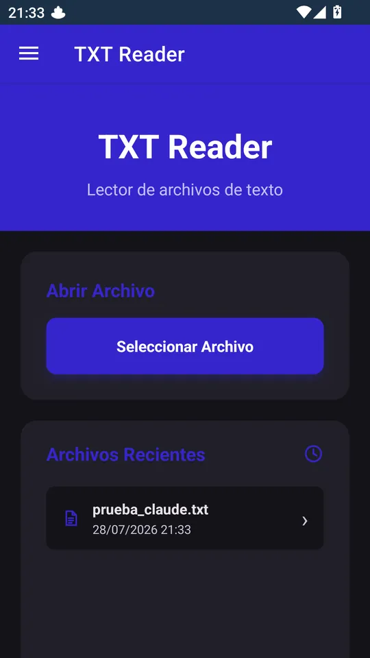
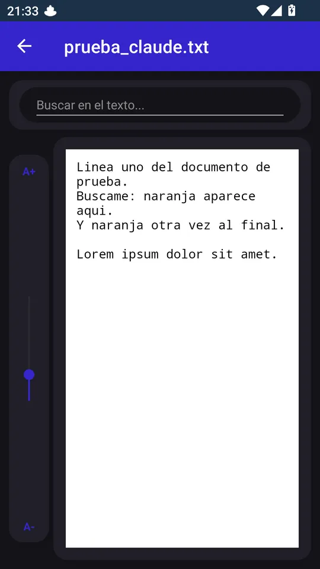
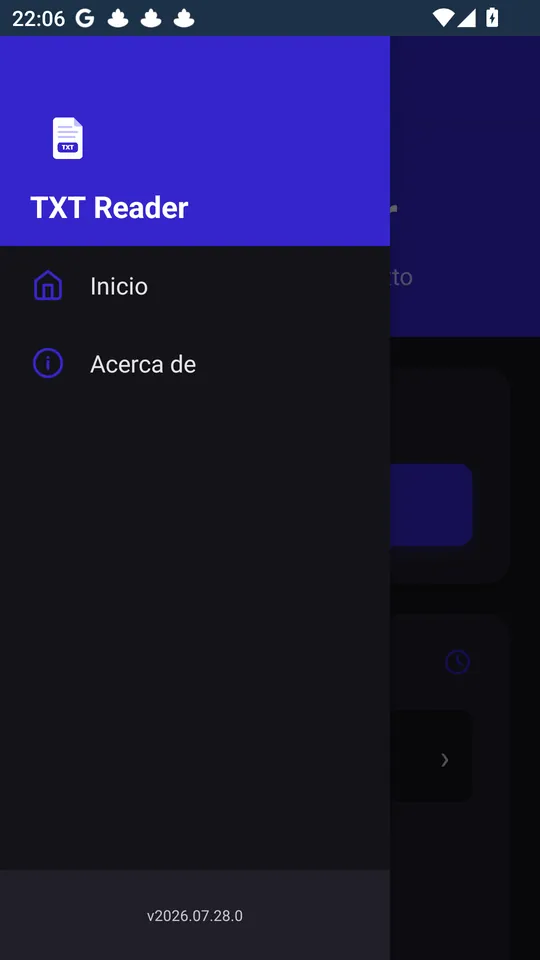

Support · TXT Reader
How TXT Reader works, screen by screen, and what every option does.
In this guide



You can also open a file from another app with "Open with" › TXT Reader (or "Share" / "Export" in Google Drive and Dropbox).
It opens with the menu button in the top bar. It has:
When you open the app, if there's a newer version you'll see "Update available: A newer version (X) is available. You have Y. Do you want to update?" with two buttons:
The picker only shows text files. If your file has an unusual extension, make sure you have the latest version: since 2026.08.01, .gpx and other files Android can't classify are supported too.
The file isn't available offline. Check that you're online and have permission for the file; if it keeps happening, download it to your phone first and open it from there. In Dropbox, use "Export" and choose TXT Reader.
When you tapped it, the app found that it no longer exists (it was deleted or moved) and removed it from the history. Open it again with "Select File" from its new location.
The encoding is detected automatically, but very short files or files with mixed encodings can throw it off. Save the file as UTF-8 from the program that created it and open it again.
Use the vertical A+ / A- slider in the reader. The size goes back to 14 points when you open another file.
There's no settings screen: the only thing you can configure is the language, which is in "About".
That's the maximum; the oldest ones drop off automatically.
Open an issue on GitHub telling us what's happening, with which version and device.